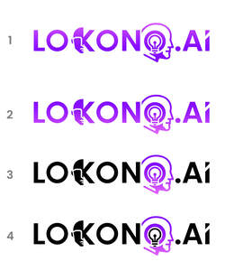

Trade Mark Journal No.2025/024 13 June 2025
UK00004211921 30 May 2025 (9,35,42)
Mark 1
Mark 2

- Class 9
- AI software; Downloadable software; Software for the analysis of business data; Machine learning software for analysis; Computer software to enable the searching of data; Computer software to enable searching of data; Downloadable computer software for the transmission of data; Downloadable computer software for remote monitoring and analysis; Computer software to enable searching and retrieval of data; Enterprise software; Downloadable computer software for the management of information; Computer software for application and database integration; Application software for cloud computing services; Downloadable cloud computing software; Dashboard software; Digital dashboard software; Business application software; Database management software.
- Class 35
- Business management services; Business intelligence services; Business consultancy services; Business advisory services; Business consultation services; Business project management services; Business analysis services; Business management advisory services; Business management and consultation services; Business strategy and planning services; Business risk management services; Business management consultancy and advisory services; Consultancy and advisory services for business management; Analysis of business data; Business data analysis services; Business analysis; Analysis of business information; Business statistical analysis; Data processing for the collection of data for business purposes; Data processing management; Provision of business statistical information; Statistical information (Provision of business -); Consulting services in business organization and management.
- Class 42
- Software as a service [SaaS]; Software as a service [SAAS] services; Platforms for artificial intelligence as software as a service [SaaS]; Software as a service; Consulting services in the field of software as a service [SaaS]; Software as a service [SaaS] featuring software for machine learning; Software as a service [SaaS] featuring software for deep learning; Software as a service [SaaS] featuring computer software platforms for artificial intelligence; Software as a service [SaaS] featuring software for deep neural networks; Software as a service [SaaS] services featuring software for machine learning, deep learning and deep neural networks; Platform as a Service [PaaS]; Application service provider services; Platforms for gaming as software as a service [SaaS]; Software as a service [SaaS] featuring software platforms for electronic gaming; Platform as a service [PaaS]; Providing on-line non-downloadable software for database management.
LOKONO AI LTD